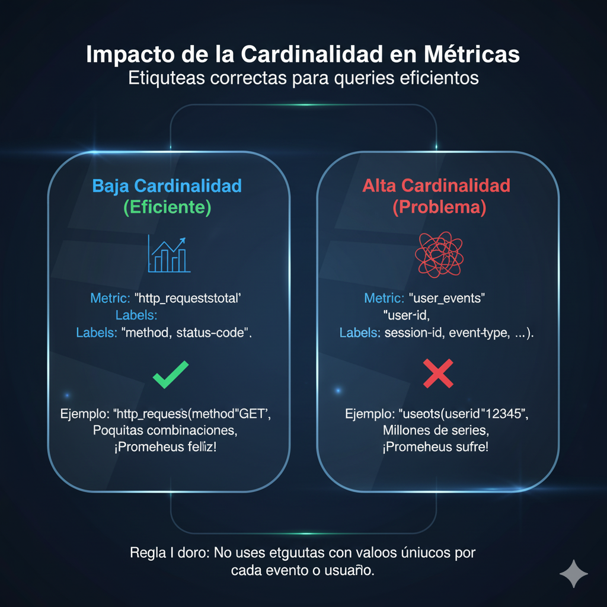

Publicado el 5 de enero, 2025
Monitoreo Accionable: Métricas, Alertas y Dashboards
El monitoreo no se trata de coleccionar datos y gráficos bonitos...
Diseño de Métricas: La Calidad sobre la Cantidad
Con Prometheus, la base de todo son las métricas y sus etiquetas...
- Cardinalidad Controlada: La cardinalidad es el número de series temporales únicas que una métrica genera...
- Etiquetas que Aportan Contexto: Las etiquetas son superpoderes...
 Etiquetas correctas para queries eficientes.
Alertas Útiles: Menos Ruido, Más Señal
El objetivo de las alertas no es avisar de "algo está mal"...
- Rutas y Receptores: No todas las alertas son iguales ni deben ir al mismo sitio...
- Severidades Claras: Clasifico las alertas en niveles de severidad...
- Agrupación y Silencios: Si 50 servidores de un clúster tienen el mismo problema, no quieres 50 alertas...
Enrutando la alerta correcta a la persona correcta.
Dashboards que Sirven: Contando una Historia
Un dashboard de Grafana no debe ser un cementerio de gráficos...